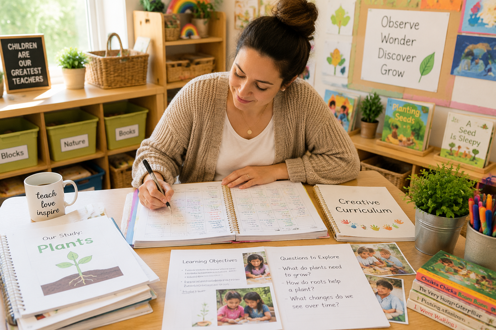
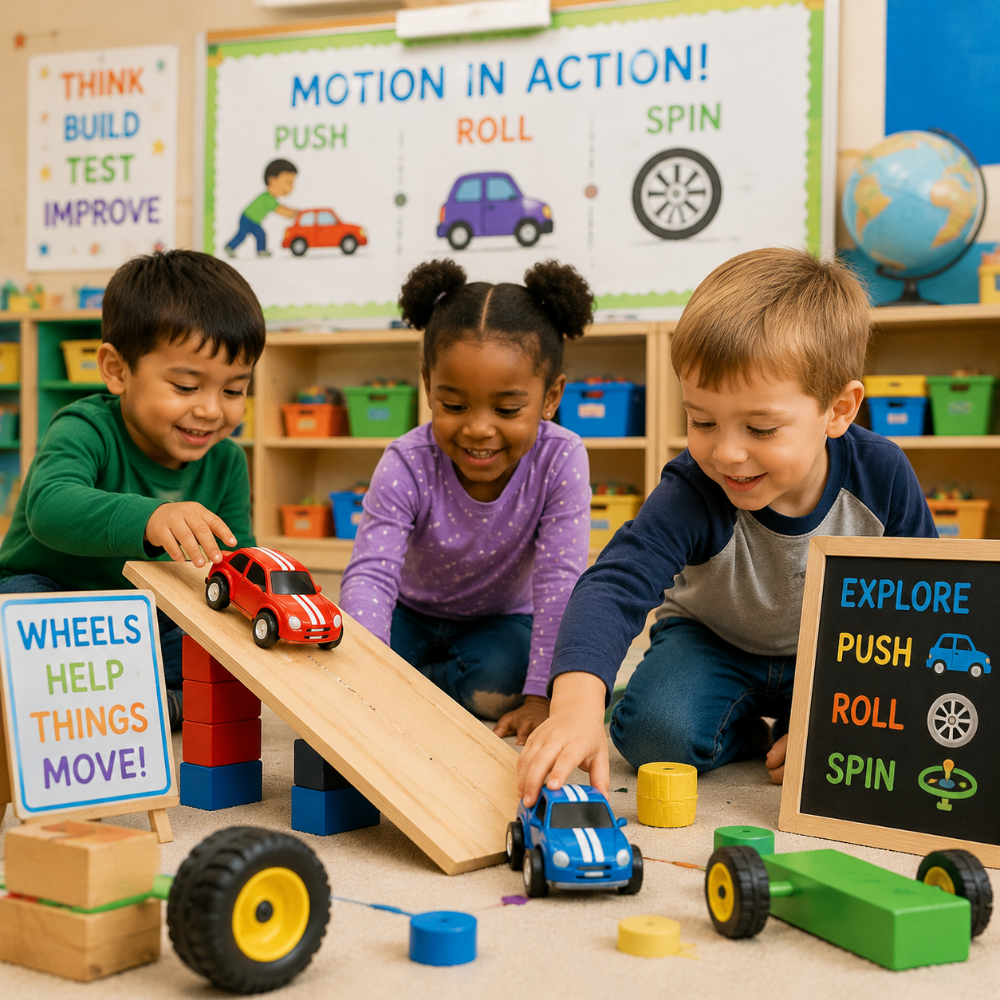
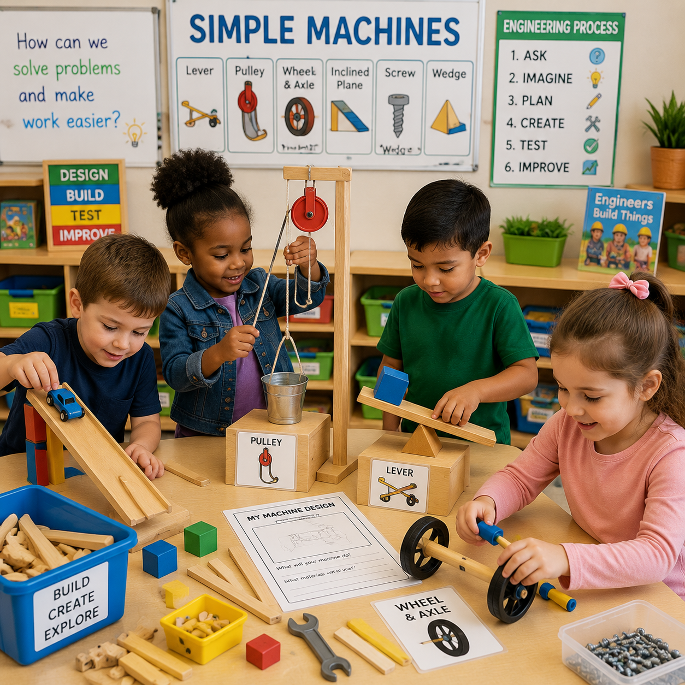

🌱 Gardening Study
Explore plants, growth, nature, observation, and caring for living things.
Support intentional teaching with planning tools, classroom resources, and teaching strategies inspired by Creative Curriculum practices. Create meaningful learning experiences through studies, investigations, interest areas, and children's discoveries.

The Teacher Resource Center provides educators with practical planning tools and classroom resources that support children's interests, investigations, development, and discoveries. Create meaningful learning experiences through studies, interest areas, observation, and intentional teaching.
Resources designed to help teachers create intentional learning experiences based on children's interests, development, and discoveries.
Organize classroom experiences with objectives, materials, questions, activities, and learning extensions.
Explore Planning Tools →Develop investigations by exploring children's questions, ideas, interests, and real-world discoveries.
Explore Studies →Support children's learning through thoughtful questions, teaching strategies, and meaningful interactions.
View Resources →Create meaningful learning experiences across classroom centers through exploration, creativity, and discovery.
Support building, engineering, problem solving, measurement, and collaboration.
Encourage science investigations, observation, experiments, and exploration.
Promote creativity, expression, fine motor development, and imagination.
Build language, social skills, role play, and understanding of the world.
Develop vocabulary, storytelling, comprehension, and early literacy skills.
Explore measurement, sensory experiences, science concepts, and problem solving.
Support children's curiosity through hands-on investigations, questions, discoveries, and meaningful classroom experiences.
Explore plants, growth, nature, observation, and caring for living things.

Investigate movement, transportation, forces, and engineering concepts.

Discover tools, pushes, pulls, and how simple machines help people work.
Support intentional teaching by documenting children's learning, development, interests, and discoveries.
Capture meaningful moments of children's learning through everyday observations.
Explore Documentation →Organize children's work, growth, reflections, and classroom experiences.
View Resources →Connect observations with developmental goals and intentional teaching decisions.
Explore Tools →Extend children's learning beyond the classroom through meaningful family connections.
Provide families with simple activities and conversations that continue classroom discoveries.
Invite families to share experiences, questions, and ideas connected to classroom studies.
Partner with families to understand children's interests, strengths, and curiosities.
Intentional teachers reflect on children's responses, questions, and discoveries to plan meaningful next steps and create deeper learning experiences.